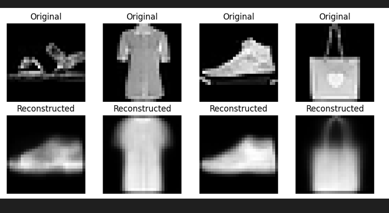
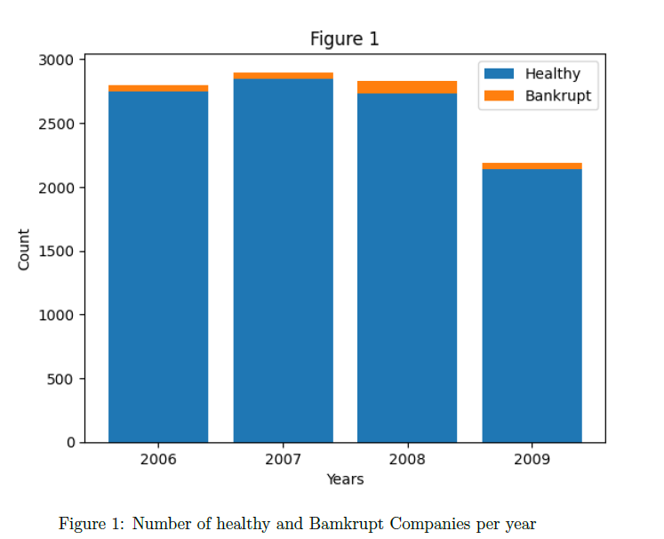
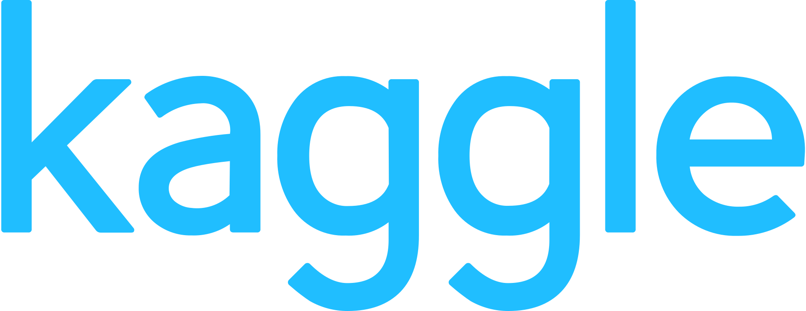
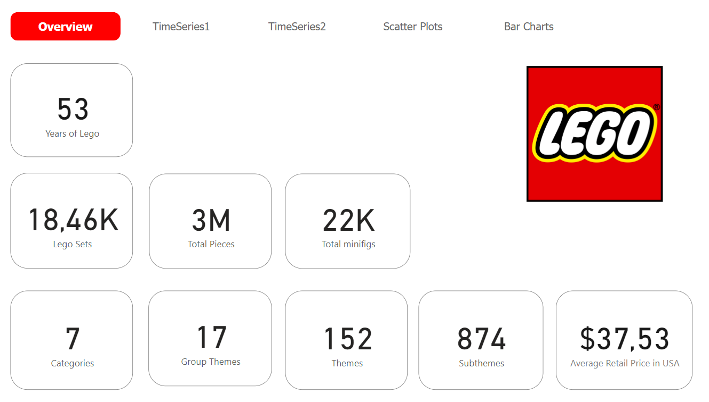
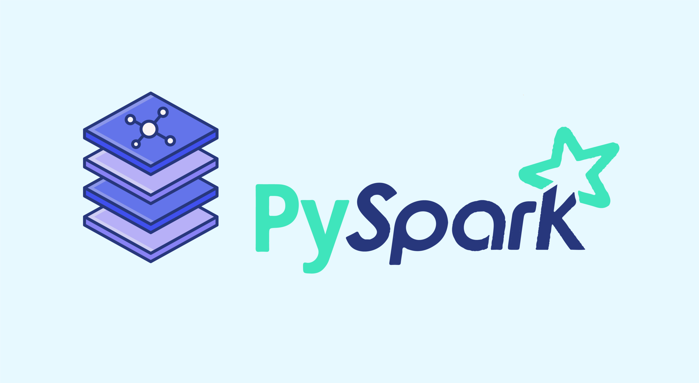

Skills: Python, Pandas, NumPy, Scikit-Learn, Matplotlib, TensorFlow, Keras
Course: Machine Learning and Computer Vision
Video face extraction and classification pipeline using MTCNN for face detection and EfficientNetB0 for real vs. fake video classification.
Skills: Python, pandas, numpy, sklearn, Neural Networks, tensorflow
Course: Machine Learning and Computer Vision

Unsupervised Learning Pipeline for Fashion-MNIST: Exploring Dimensionality Reduction and Clustering Techniques. Implemented a comprehensive pipeline for dimensionality reduction and clustering on the Fashion-MNIST dataset using 5 techniques including PCA, FA, FastICA, SAE, CSAE, and Raw data and conducted performance evaluation.
Skills: Python, pandas, numpy, sklearn, Neural Networks, tensorflow
Course: Machine Learning and Computer Vision

Led a project to predict bankruptcy risk using machine learning. Conducted data preprocessing, exploratory analysis, and model development. Implemented 8 classification algorithms and evaluated model performance. Utilized cross-validation and oversampling techniques for robustness. Generated visualizations and documented project findings.
Skills: Python, pandas, numpy, sklearn
Course: Information Retrieval and Search Engines

Exploratory data analysis of various datasets.

A Power BI Dashboard exploring 53 years of Lego Sets.

Performing Data Clustering with PySpark Using the K-means Algorithm.

Given a data file containing a document access log, including IP addresses, the program identifies and extracts a list of users (IPs) who accessed a document more than once on distinct dates.